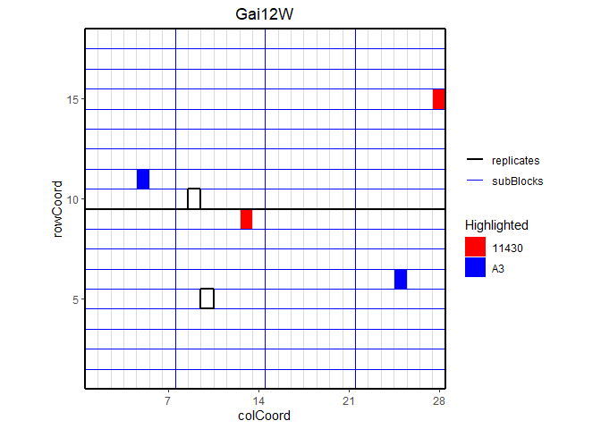
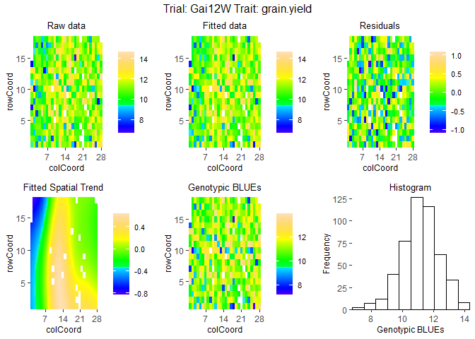

statgenSTA is an R package providing functions for phenotypic analysis of agricultural field trials using mixed models with and without spatial components.
Analysis can be done using one of the R packages SpATS, lme4 or asreml. For the latter a license is required which can be obtained upon purchase from VSNi.
statgenSTA has extensive options for summarizing and visualizing both the raw data and the fitted models. The example below shows a selection of what is possible. For a full overview of all options it is best to read the vignette
Installation
- Install from CRAN:
install.packages("statgenSTA")- Install latest development version from GitHub (requires remotes package):
remotes::install_github("Biometris/statgenSTA", ref = "develop", dependencies = TRUE)Examples
Example using the phenotypic data for a wheat trial in Chile. The same data is used in the vignette and described there in detail.
First get the data in the form required by the package, converting it to an object of class T(rial)D(ata).
library(statgenSTA)
data(dropsRaw)
dropsTD <- createTD(data = dropsRaw,
genotype = "Variety_ID",
trial = "Experiment",
loc = "Site",
repId = "Replicate",
subBlock = "block",
rowCoord = "Row",
colCoord = "Column",
trLat = "Lat",
trLong = "Long")Some plots to get a first idea of the contents of the data.
## Plot the layout for Gai12W.
## Highlight genotypes A3 and 11430 in red and blue.
plot(dropsTD,
trials = "Gai12W",
highlight = c("A3", "11430"),
colHighlight = c("red", "blue"))
## Plot the locations of the trials on a map.
## Color the trials by water scenario.
plot(dropsTD,
plotType = "map",
colorTrialBy = "scenarioWater",
colTrial = c("red", "darkgreen"))
## Create a boxplot for grain yield.
plot(dropsTD,
plotType = "box",
traits = "grain.yield")
## Create a scatter plot matrix for grain yield.
## Color trials by scenario and genotypes by family.
plot(dropsTD,
plotType = "scatter",
traits = "grain.yield",
colorTrialBy = "scenarioFull",
colorGenoBy = "geneticGroup")Fit mixed models for one of the trials, Gai12W, and visualize the output.
## Fit a single trial model using a model based on a resolvable row column design.
modDropsSp <- fitTD(TD = dropsTD,
trials = "Gai12W",
traits = "grain.yield",
design = "res.rowcol")
#> Using SpATS for fitting models.
## Spatial plot for the model with genotype fitted as fixed effect.
plot(modDropsSp,
plotType = "spatial")
## Spatial plot for the model with genotype fitted as fixed effect.
## Display the spatial trend as a percentage.
plot(modDropsSp,
plotType = "spatial",
spaTrend = "percentage")